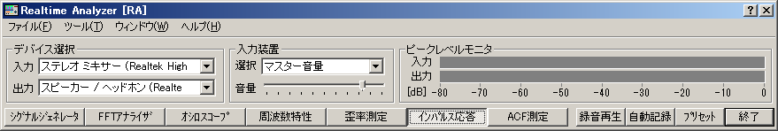
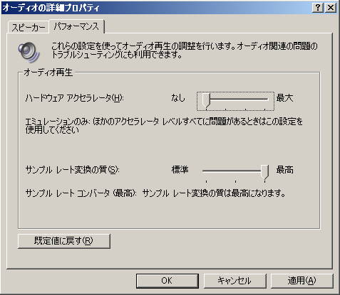
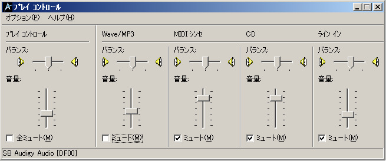

DSSF3 > RA > インパルス応答測定 > 測定ガイド
入力デバイスの設定、ボリュームコントロール
RAのメインウインドウで入力装置と入力デバイス（サウンドカード）を選択してください。

入力、出力の時間的同期がうまく取れない場合は、インパルス応答で得られる直接音の到着時間が安定しません。万一うまく測定できない場合は、入出力のドライバーが最新バージョンかどうか確認し できるだけ最新のものをご使用ください。
また、以下のような調整もううまく同期が取れない場合は有効です。
サウンドとマルチメディアのプロパティを開いてください（Windowsのスタートメニューから、設定 > コントロールパネル > サウンドとオーディオデバイスのプロパティ）

再生、録音デバイス共、詳細ボタンをクリックして「パフォーマンス」を開いてください。ここで、信号を遅延させる可能性のあるアクセラレータを「なし」に、サンプルレートの変換の質を 「最高」にしてください。

Windowsのボリュームコントロールの設定 （重要）
Windowsのボリュームコントロール（再生）を開いて、WAVE以外の項目をミュートして下さい。そうしないとマイクやラインからの入力がそのまま出力されてハウリングを起こす恐れがあります。また、トーン調整がある場合は、チェックは外してください。余分な音響効果があると正しく測定できません。再生音量は、歪まない範囲でできるだけ大きくしてください。スピーカー出力はやや抑え気味にします。歪を避けるためです。

Windowsのボリュームコントロール（録音）側の設定も重要です。マイクをつなぐ入力デバイス（通常はマイクかラインイン）を選択します。
DSSF3 > RA > インパルス応答測定 > 測定ガイド